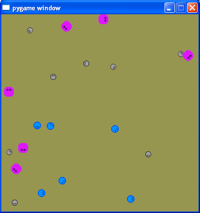
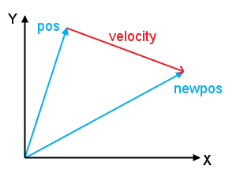
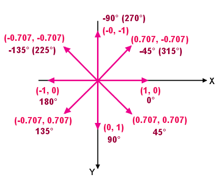
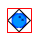
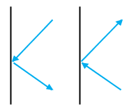

Introduction
Games are one of the most applicative areas of programming. To write even the simplest games, you have to get into graphics, math, physics and even AI. It's a great and fun way to practice programming.
If you're a fan of Python (and even if you aren't) and are interested in games, Pygame is a great library for game programming, and you should definitely check it out. It runs on all major platforms, and provides simple tools to manage complex graphical worlds with movement and sounds.
There are quite a lot of Pygame tutorials on the web, but most of them are basic. Even the Pygame book stays at an introductory level. In order to proceed to a higher level of mastery, I've decided to write a tutorial of my own, hoping that it will provide the next logical step for persons wanting to use Pygame.
This tutorial explicitly encourages you to tinker with the code. It is also highly recommended to do the exercises in the end. These will greatly aid your understanding of the learned material.
Preliminaries
For reasons I've mentioned above, this tutorial is not for complete beginners. If you're just beginning with Pygame, first go through some of the tutorials from this page. This tutorial is also recommended as a basic introduction to Pygame.
Here, I assume that you have the following knowledge:
- Python (you don't have to be an advanced user, but not a complete beginner either)
- Basics of math and physics (vectors, rectangles, laws of movement, probability, etc.). I will explain all the non-trivial tricks, but I won't teach how to add vectors, and so on.
- An acquaintance with Pygame. I.e. you've already went through at least a couple of the tutorials mentioned above.
Oh, and another thing... This tutorial will focus on a 2D game. 3D is a whole new level of complexity, and I prefer a simpler but complete game to a half-baked 3D demo.
Let's get started
In this part, we'll end up writing a demo - a complete simulation of creeps, round creatures that move around the screen, bouncing off walls and changing their direction from time to time:
While this is not yet a game per se, it's a useful starting point, from which we can implement many various ideas. I'll leave myself the luxury of postponing the decision of which game it will eventually be, for now.
The code
The complete package for part 1, with all the required images, can be downloaded from here. I recommend you to download it and run the demo. Having the code in front of your eyes is very useful. I tested it with Python 2.5.2 and Pygame 1.8.1, although it will probably work with other versions as well.
Pygame's docs
Pygame's API is documented fairly well. There is a complete list of modules, classes, constants and functions provided by Pygame there, and I encourage you to consult this resource often - for each Pygame class/method you're not familiar with.
Creeps
Okay, so first let's set the goals for this part:
- We want to have creeps moving around the screen
- The number of creeps and their appearance should be easily configurable
- The creeps will bounce off walls correctly
- To make things more interesting, the creeps will exhibit semi-random behavior
So what is a creep ?
A creep is a small image that will be moved around the screen and rotated using Pygame's capabilities. Keeping rotated images pretty takes more artistic skill than I possess, so I'll limit the rotations to quantas of 45 degrees (meaning that creeps will move up, down, left, right or in 4 diagonals).
The creep images contained in the downloadable package are small .png files [1]
Note that all the creep images have the same orientation. This is significant, as we will learn later.
How do creeps move?
As you've undoubtedly read in one of the basic Pygame tutorials (haven't you ??), movement is an illusion. Nothing really moves on a computer screen. Rather, the program displays a sequence of images with small displacements fast enough for the human eye to perceive movement. The rule of thumb is that anything 30 updates per second [2] or faster is good enough and looks smooth to the average person.
To implement periodic update of the screen, games use the game loop.
The game loop
Just like a GUI, every game has the "main loop". In Pygame you implement it with a Python loop, which is simple enough. Here's our main loop:
# The main game loop
#
while True:
# Limit frame speed to 50 FPS
#
time_passed = clock.tick(50)
for event in pygame.event.get():
if event.type == pygame.QUIT:
exit_game()
# Redraw the background
screen.fill(BG_COLOR)
# Update and redraw all creeps
for creep in creeps:
creep.update(time_passed)
creep.blitme()
pygame.display.flip()
Jumping right into the code, eh ? Well, let's see what goes on here. As I've said, it's your basic Python loop - endless, until the user asks to quit. pygame.QUIT is the only event handled here, as you can see. It arrives when the user attempts to close the program's window.
How often does this loop run ? This is decided by the call to clock.tick. clock is a pygame.time.Clock object, created earlier. The call to tick basically says this: sleep until the next 1/50 second boundary, at most. In practice, this limits the game speed to 50 FPS, which is a good thing, because we want the game to be smooth on one hand, and not eat up most of the CPU on the other hand. You can experiment with this effect by playing with the value. Lower it to 10, for example. How does the demo look ? Also, see exercises 1 and 3.
Now is a good time to immerse yourself in the documentation of tick, by the way.
The really interesting stuff happens later. On each iteration, the screen is refilled with the background color and all the creeps are updated and drawn. Finally, the display is updated with flip (Yes, you should read its documentation now).
What comes before the loop
Now let's see what comes before the main loop:
# Game parameters
SCREEN_WIDTH, SCREEN_HEIGHT = 400, 400
BG_COLOR = 150, 150, 80
CREEP_FILENAMES = [
'bluecreep.png',
'pinkcreep.png',
'graycreep.png']
N_CREEPS = 20
pygame.init()
screen = pygame.display.set_mode(
(SCREEN_WIDTH, SCREEN_HEIGHT), 0, 32)
clock = pygame.time.Clock()
# Create N_CREEPS random creeps.
creeps = []
for i in range(N_CREEPS):
creeps.append(Creep(screen,
choice(CREEP_FILENAMES),
( randint(0, SCREEN_WIDTH),
randint(0, SCREEN_HEIGHT)),
( choice([-1, 1]),
choice([-1, 1])),
0.1))
OK, not much magic here. The first few lines are self-explanatory. I also assume you already know how to initialize Pygame and create a display object. What about the creation of creeps, though?
creeps is a list of Creep objects - the heart and soul of this game. Here's the declaration of the Creep class with its constructor's signature:
class Creep(Sprite):
""" A creep sprite that bounces off walls and changes its
direction from time to time.
"""
def __init__(
self, screen, img_filename, init_position,
init_direction, speed):
""" Create a new Creep.
screen:
The screen on which the creep lives (must be a
pygame Surface object, such as pygame.display)
img_filaneme:
Image file for the creep.
init_position:
A vec2d or a pair specifying the initial position
of the creep on the screen.
init_direction:
A vec2d or a pair specifying the initial direction
of the creep. Must have an angle that is a
multiple of 45 degres.
speed:
Creep speed, in pixels/millisecond (px/ms)
"""
The arguments are well documented, and you can see how they are matched by the passed values when the creeps are created:
creeps.append(Creep(screen,
choice(CREEP_FILENAMES),
( randint(0, SCREEN_WIDTH),
randint(0, SCREEN_HEIGHT)),
( choice([-1, 1]),
choice([-1, 1])),
0.1))
First, we pass the screen surface to the Creep. It will use it to figure out how to bounce off walls, and where to draw itself.
Next, the Creep is provided with a random image from the list of images (choice is a function from Python's standard random module), and is set in a random position on the screen (randint is also from random), with a random direction (more about the direction later). The speed is set to 0.1 px/ms (0.1 pixels per millisecond), or 100 pixels per second.
Vectors and directions
This is perhaps the least simple part of the creeps demo. Grokking vectors in game programming is essential, since vectors are the chief mathematical tool for making computations related to movement on the screen.
We'll use vectors for two things. One is to describe the position and velocity (displacement) of creeps. As you surely know, a position (a point) on the XY plane can be represented by a 2D vector. The difference between two vectors is the velocity (displacement) vector. In other words, adding the velocity vector to the original position vector yields the new position:
This is all good and nice, except for a small twist. While in the mathematical world, we're accustomed to the XY plane to look as it does on the diagram above (positive X pointing right, positive Y pointing up), when we're drawing on the screen we must think a bit differently. In almost all graphical drawing interfaces, the top-left corner is (0, 0), X increases to the right, and Y increases to downwards. In other words, the screen drawing XY plane is:
This is a very important diagram! It represents the basic 8 normalized vectors we'll be using in the creep demo. These are the directions the creep can be pointing in (all multiples of 45 degrees over the unit circle). Make sure you understand it before moving on.
Recall the direction argument to the constructor of Creep ? This is the vector that specifies the initial direction of the creep. Actually, the constructor allows to pass in a pair, which is later turned into a vector and normalized (so, for instance, passing the pair (-1, -1) will result in the expected north-west direction).
This direction will be later changed by the creep itself when it either decides to go another way or bounces off a wall.
Implementing vectors
Surprisingly, Pygame doesn't have a "standard" vector implementation shipping with it. So game writers have to either roll their own or find vector modules online.
Included in the package is the vec2d.py file, a 2D vector implementation I've borrowed from the Pygame Wiki. It is a pretty good implementation of a 2D vector with a lot of useful utility functions. There's no need for you to read and understand its full code now, but see exercise 4.
Updating the creep
The most interesting function of this demo is the update method of Creep.
def update(self, time_passed):
This method is called periodically by the main loop and is passed the amount of time passed (in milliseconds) since the previous call. Using this knowledge, the creep can compute its next location.
Let's learn the code of update, step by step:
# Maybe it's time to change the direction ?
#
self._change_direction(time_passed)
# Make the creep point in the correct direction.
# Since our direction vector is in screen coordinates
# (i.e. right bottom is 1, 1), and rotate() rotates
# counter-clockwise, the angle must be inverted to
# work correctly.
#
self.image = pygame.transform.rotate(
self.base_image, -self.direction.angle)
First, the internal _change_direction is called to see if the creep wants to randomly change its direction. The code of _change_direction will be simple to understand after we complete going through update, so I'm leaving it for exercise 5.
The next operation is to rotate the creep image in the correct direction. Recall how I noted that all the creep images point to the right? This is essential for correct and consistent rotation. transform.rotate (read its docs!) rotates a given surface counterclockwise by the provided angle.
Now, why do we give it a negation of the angle ? This is exactly because of the inverted "screen XY plane" I've mentioned before. Imagine the base creep image (which is, by the way, loaded in the constructor of Creep - see how):
And suppose our direction is 45 degrees (that is, south-east in our screen coordinates). If we give 45 degrees to rotate, it will make the creep point north-east (as its rotation is counterclockwise). So to perform the correct rotation, we have to negate the angle.
Next in update, we see:
# Compute and apply the displacement to the position
# vector. The displacement is a vector, having the angle
# of self.direction (which is normalized to not affect
# the magnitude of the displacement)
#
displacement = vec2d(
self.direction.x * self.speed * time_passed,
self.direction.y * self.speed * time_passed)
self.pos += displacement
As I said, self.direction is a normalized vector that tells us where the creep points to. It is important for it to be normalized for this computation to work correctly, because we don't want it to affect the magnitude of the displacement. The displacement is computed from the basic rule of motion that distance equals speed multiplied by time, just in 2 dimensions.
The next part of update deals with bouncing off walls. To make it more intelligible, I want to first show how the creep is drawn to the screen.
Blitme!
Blitting is the game programmers' jargon for transferring an image (or a pattern) onto a drawable surface. In Pygame this is implemented with the blit function.
def blitme(self):
""" Blit the creep onto the screen that was provided in
the constructor.
"""
# The creep image is placed at self.pos.
# To allow for smooth movement even when the creep rotates
# and the image size changes, its placement is always
# centered.
#
draw_pos = self.image.get_rect().move(
self.pos.x - self.image_w / 2,
self.pos.y - self.image_h / 2)
self.screen.blit(self.image, draw_pos)
Blitting, like many other things in Pygame, use the versatile pygame.Rect class. The call to blit accepts an image (a surface, actually) and a rectangle that specifies where this image will be blitted to the surface on which blit is invoked.
And sure enough, we provide the drawing position as the creep's current position (self.pos) but with a small adjustment. What for ?
Thing is, when images are rotated in Pygame, their size increases. Here's why:
Since the image is square, Pygame has to include all of its information in the rotated image, so the rotated image has to grow in size. This only happens for rotations that are not multiples of 90 degrees, by the way (see exercise 6).
So, whenever a creep turns, its image size changes. Without a special adjustment, the creep will shift with each turn and the animation won't be smooth and pretty.
The adjustment is simple enough: we center the creep when we draw it. Look at this code again:
draw_pos = self.image.get_rect().move(
self.pos.x - self.image_w / 2,
self.pos.y - self.image_h / 2)
self.screen.blit(self.image, draw_pos)
The draw position is computed to be the center of the creep's image. Even when the image rotates and grows, its center stays in the same place, so there will be no noticeable shift in the creep this way.
Bouncing off walls
Make sure you understand the "centered drawing" trick described in the previous section (and see exercise 7) first. Once you do, understanding how the creep bounces off walls is easy. Here's the code:
# When the image is rotated, its size is changed.
# We must take the size into account for detecting
# collisions with the walls.
#
self.image_w, self.image_h = self.image.get_size()
bounds_rect = self.screen.get_rect().inflate(
-self.image_w, -self.image_h)
if self.pos.x < bounds_rect.left:
self.pos.x = bounds_rect.left
self.direction.x *= -1
elif self.pos.x > bounds_rect.right:
self.pos.x = bounds_rect.right
self.direction.x *= -1
elif self.pos.y < bounds_rect.top:
self.pos.y = bounds_rect.top
self.direction.y *= -1
elif self.pos.y > bounds_rect.bottom:
self.pos.y = bounds_rect.bottom
self.direction.y *= -1
First, the screen boundary itself is computed, by taking the rectangle representing the screen and adjusting it to the image size (this is required for our centered drawing).
Then, for each of the 4 walls we compute whether the creep collides with it, and if it does, the creep's direction is inverted in the axis perpendicular to the wall, simulating a smooth bounce. Let's dissect one of such conditions:
if self.pos.x < bounds_rect.left:
self.pos.x = bounds_rect.left
self.direction.x *= -1
This is for the bounce off the left wall. The creeps always arrives to it from the right, so when we negate the X component of its direction vector while keeping the Y component intact, it will start moving to the right but with the same vertical direction.
Conclusion
We've seen most of the interesting code of creeps.py now. If something still remains unclear, go through the whole code with the diagrams from this tutorial in front of your eyes. If things remain unclear, let me know and I'll gladly help.
One can understand a tutorial or a lecture on several levels. The most basic is just reading it. To make understanding deeper, one must also practice the material. And to master something, you should apply your brain to new material, new challenges based on the tutorial but not directly explained in it. For this, I once again warmly encourage you to at least look at the exercises and try to think how to do them. The best would be implementing solutions and tinkering with the code itself.
What's next
The creeps demo can serve as a good basis for quite a few games. I haven't decided which I want to write, yet, and how far I want to take this tutorial at all. So its future direction depends a lot on your feedback. Feel free to comment or write me an email.

Exercises
- Increase the amount of creeps by modifying the N_CREEPS constant. On my PC, the demo runs easily and smoothly with hundreds of creeps.
- Modify the creep creation line to have 60% gray creeps, 20% blue and 20% pink.
- Experiment with the call to clock.tick in the main loop. Try to print out the time passed between ticks, and then modify the argument to tick. If you provide no argument, it runs as fast as it can. See how much time passes between ticks when the amount of creeps increases.
- Open vec2d.py, and read the code of all the methods and attributes used in our creeps demo.
- Modify the _change_direction method to change the behavior of creeps. (1) Make them change direction more often and observe the behavior. (2) Can you make them stop for a second once in a while ? You'd have to modify the speed for that.
- Can you use basic trigonometry to compute by how much the image increases when it's rotated by 45 degrees in Pygame ?
- Rewrite the drawing code to cancel centered drawing (just provide the unadjusted image rectangle to blit). How does it look ?
Updates
- 13.12.2008 - Simplified the code for bouncing off walls. Thanks to Andrei for the tip.
| [1] | PNG is a useful format - it is free, provides efficient lossless compression and supports alpha (transparency). |
| [2] | Or Frames Per Second (FPS) in game programming jargon. Counting FPS is the hobby of game programmers worldwide. |